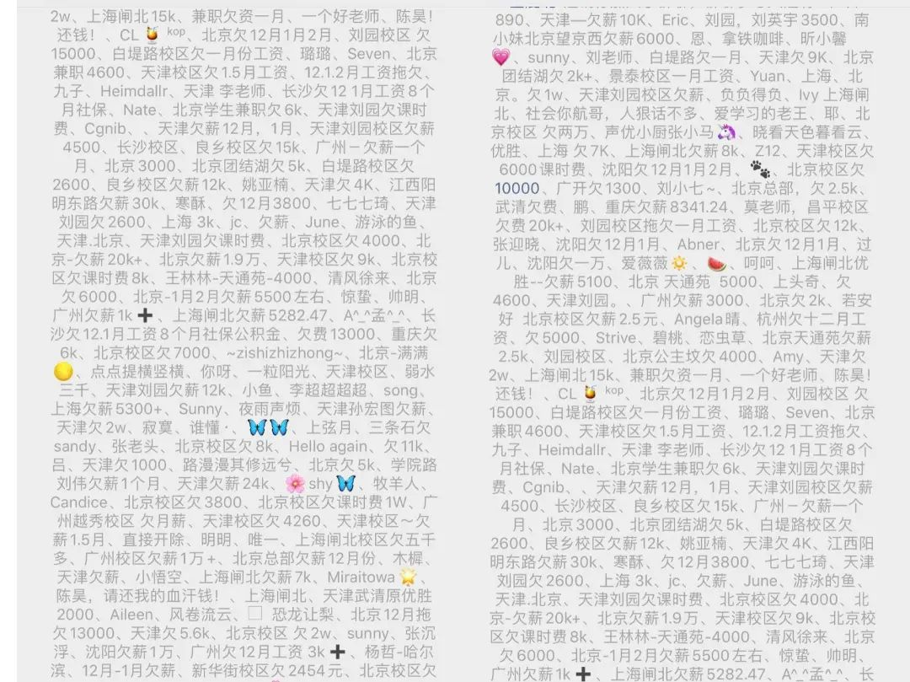
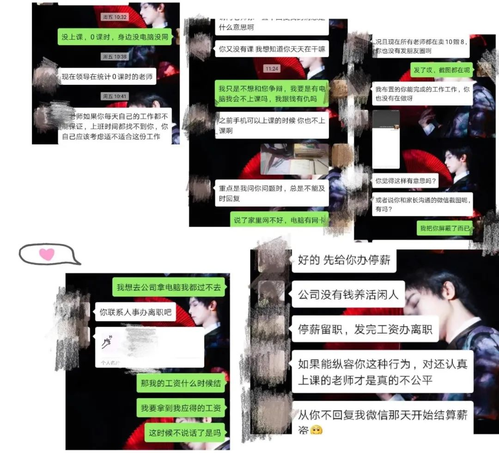

8名高管、20多名员工滞留湖北，一家温州工厂的艰难复工
原文链接 备份链接 ***机器再度轰鸣*** 距离温州南站五六公里的瓯海区富泉路上，遍布着各式鞋厂、超市和快餐店。原本熙熙攘攘的街道，如今在疫情的阴影下显得有点冷清。 临近饭点，马路南端一家电子厂的员工走进附近一家快餐店——这个快餐店的 …

燃财经（ID:rancaijing）原创
作者 | 韩冰
编辑 | 阿伦
疫情“黑天鹅”一出，企业现金流骤降，不少线下业态面临生存考验，教育机构首当其冲。
近日，教育培训机构“优胜教育”被曝拖欠薪资，部分员工遭遇裁员。同时，有员工反馈校区要求老师转型销售全员卖课，提成日结，并通知周上课不超过20小时、月销售不足120课时者将被优化或转兼职。
据员工反映，优胜教育在2019年12月就出现了资金和运营问题。有在职或离职员工只收到12月以后部分工资，也有校区出现关店传言、家长要求退费现象。另外，有员工指出公司长期以来分两张卡发工资以避税。
对此，优胜教育回应燃财经称：“疫情期间公司在竭尽全力分批发放工资，未来会陆续补充发放；跟不上公司步伐和要求的员工会有一定的优化，疫情期间流程上可能有不规范的地方；全员销售是很多公司使用的方法，很正常。”
优胜教育是一家成立20余年的教育机构，主打K12领域个性化教育，在全国有1500多家门店，1.3万余名员工，门店有直营、加盟等形式。优胜教育创始人兼董事长陈昊在业界颇有名气，曾在求职类节目《非你莫属》中担任BOSS团嘉宾，因言辞犀利引起不少人关注。
陈昊也曾在某视频节目中提到优胜教育曾听取咨询公司的建议结果走了弯路，导致公司不合理扩张，遭遇重大损失。最惨的时候，陈昊卖了房子、抵押了车，回到家首先把阳台门堵上以防跳楼。如今，优胜教育再次面临考验。
***员工指优胜教育欠薪、裁员***
***要求全员销售***
“1月8日，我和另一个同事在加班，经理跟我们说，你们明天不用来了，直接找财务就可以了，”优胜教育广州市二宫校区的教师廖老师告诉燃财经，“询问原因时，HR说‘你是被开除的’，原因是试用期考核不达标、不服从管理。但当时我已经过了试用期一个月了，只是还没签合同。”
廖老师拒绝主动申请离职，主管随即把他从校区所有的工作群里移除。工资只发了2019年12月和2020年1月底薪的30%，几百块钱。
在燃财经加入的一个优胜维权群里，近170余名优胜员工自称有欠薪、被离职、强制转兼职岗、合同纠纷等遭遇。

优胜教育维权群里员工备注的欠薪信息
图 / 微信群截图
据廖老师介绍，她所在的校区平时总部给定的脱贫线（校区成本）是23万，总目标是46万，疫情前他们每个月营收大约在23万左右，1月份因为很多学生放寒假回老家，学员减少，营收仅10万多。而且，她也早听说所在校区要合并到其它校区。

优胜教育通知截图／受访者供图
北京九龙山校区的王玲在优胜教育工作两年多了，据她介绍，疫情之下校区开始转为线上上课，但她因为老家没电脑没网，上不了课而被辞退并踢出了工作群。
“我在疫情期间上不了课属于不可抗力，但公司每天要求的刷题和参加线上会议我都是出勤的，我本来打算等情况稳定一点回校区拿电脑再上课，但我们部门主管在2月14日以我不上课为由让我办离职再转兼职，我不同意，2月20日校长和主管就把我移出所有群了。现在还欠着我1月和2月的工资共5000多元。”王玲表示。

因疫情不能上课的老师被辞退聊天记录
图 / 受访者供图
“被裁员”的例子不在少数。优胜教育顺义校区市场专员与课程顾问邓秋雨于2019年7月入职，根据他的说法，疫情期间他被要求每天在家打150个电话卖课，“2月24日，校长跟我说公司经营情况不太好，要优化员工，让我自己写因个人原因申请辞职，未来等公司线下开了可以再重新入职。我没有填写，2月25日早上校长就把我移出了所有的工作群，现在打卡也打不了。”
一部分员工欠薪和被裁员，在岗员工则反馈目前优胜教育的考核机制非常严格，要求所有的老师转型销售，全员卖课，课程套餐有买10送10、买60买送60、买90送100等。
优信教育的营销广告
图 / 受访者供图
一周上20个小时的课，卖出120课时的课程，否则就强制离职或转兼职，如此激进的营销方式也引来了很多老师的不满。
优胜教育长沙少年宫校区的老师小梅表示：“2月份校区开始转线上课，但很多家长不愿意接受，因为价钱一样，线上课程效果不好，学校也有网课，另外家长也不愿意让学生长时间盯着手机或电脑。但校区要求我们说服家长上课，刚开始每个老师一个月消课突破0就可以，后来改成突破10、20小时，现在改成一周20小时了，否则就要被迫离职或转兼职。”
有校区的销售手段更为激进，当天卖课，第二天会发课程总价10%的提成到员工卡里，有日薪、周薪等激励机制。
“校区还要求我们做营销，一个月要新卖出120课时才能给工资。校区的说法是卖的课越多工资来得就越快，到现在我勉强上满了20节课，新课程一节都没卖出去。”小梅提到。
关于薪资发放问题，2月12日，优胜教育曾发布全员信表示，公司在疫情之下制定了短期内紧急员工工资发放规则，“在保障员工基本条件满足的情况下，按期发放一定比例的工资，未能及时发放的将于今年4月份开始陆续进行补偿发放。教师岗位还将获得5%以上线上授课额外激励。”
***20年老牌教育机构***
***早有合同、运营纠纷***
据官网介绍，优胜教育集团成立于1999年，开启了教育行业OMO先河，融合线上教学、中心授课、到家辅导，实现从线上到线下，从校区到上门的全场景教育服务。优胜教育全国校区分为直营、代管和加盟三种类型，有1500多个校区，约1.3万名员工。
燃财经了解到，在疫情之前，优胜教育就开始显现资金和运营问题。
北京总部品牌部内容运营小宇在2019年12月主动离职，但欠着的9000多元薪资至今都没有发。天津刘园校区的阳阳也告诉燃财经，“1月份我们的工资就没发，1月20号左右有传言说总部要放弃我们校区，就有家长来退费，有一次一个家长和工作人员吵架吵得很凶，校区第二天就关门了。”
到2月3日校区要线上办公，后来阳阳才得知她和几个态度强硬要求发工资的老师都“被离职”了，微信群和钉钉都移除了，欠着她1万元左右的工资和几千块钱医保报销费用。
此外，维权群多位优胜教育员工表示遇到社保和合同纠纷。
优胜教育劲松校区的小雪2019年在优胜教育工作5个月，离职后才发现公司一直没给她交社保，提交了仲裁发现自己的合同有问题，“首先，我合同的甲方不是优胜教育的主体公司优胜辉煌有限公司，而是北京宏志胜文教育咨询有限公司，其次，合同显示试用期六个月签的是非全日制合同，合同里回避了试用期相关词汇，条款里写着每周工作24小时，其余都算自愿加班，但事实上我们上的都是全日制的班，非全合同其实是一种兼职合同，不受劳动法完全保护。”
小雪还提到，“校区让我们老师配合销售卖课，自己感觉老师根本不是在上课，而是想尽一切办法消课、卖课。”还有人反馈：“校区整体特别注重销售，如果能拉来学员就会有奖金，认真上课的老师并没有什么奖励。”
优胜教育内部还存在一个现象就是“分卡”，公司要求员工在自己的工资卡之外再登记一张家人或朋友的工资卡，每月工资分两笔分别发在两个卡里，“说是对我们好，为了避税。”
 优胜教育工作群里通知员工分卡
优胜教育工作群里通知员工分卡
图 / 受访者供图
针对员工反映的问题，燃财经致电优胜教育总部客服和城市经理求证，对方均要求留下联系方式，称将会派负责人联系。
随后一位自称优胜教育法务的女士联系燃财经，回应了一些问题，期间她多次“提醒”燃财经，员工所言不客观、也不全面，未经考证发布将追究法律责任。该法务称其回应内容经确认后可以发布，但在与其确认内容时又表示：“今天的话仅代表我个人”。以下是主要回应内容：
有关欠薪问题：疫情期间公司在竭尽全力分批发放工资，未来可能要应对三四个月收入极少的状况，不可能按照原来的进度发，未来会陆续补充发放。
优化问题：这中间可能有一些个例，但成千上万的员工在跟我们一起努力。整体上公司希望尽量保留更多的战友，让更多人突破自己。同时，疫情期间跟不上公司的步伐和要求，创造不出价值的员工，有一定的优化是合法合理的，流程上疫情期间可能有不规范的地方，现在是艰苦的时候我们希望员工尽量配合。
全员销售：全员销售是很多公司使用的方法，之前公司成熟、分工细化没有要求老师销售，现在调整了业务模型要求全员销售也很正常。
合同问题：我们跟员工的合同分全日制和非全日制两种，两种在社会福利缴纳上不同，合同表述很清晰，是员工自愿签订的，不存在问题。
*****创始人参加电视招聘节目受关注*****
*****曾自称压力大到想跳楼*****
公开资料显示，优胜教育创始人、董事长陈昊，1978年出生，对外经济贸易大学硕士，出生于书香门第家庭，父亲陈传平是中国著名数学家、中科院研究员、博士生导师，母亲唐芳琼是中国著名科学家、中科院研究员、博士生导师。 陈昊1999年涉足教育领域，研究中小学生个性化教育项目。
陈昊曾是常驻《非你莫属》节目的BOSS团成员之一，在节目上常常怼求职者，其犀利表现引起了很多人关注。

陈昊参加《非你莫属》节目
同时，陈昊在节目《异想天开》中也曾分享过自己的创业经历，尤其是失败的教训。
他提到，2007年的时候，优胜教育一年有近2000万利润，当时请了咨询公司谋求继续做大，借鉴海外连锁企业的经验，没料到吃了大亏。当时做了几件事，第一就是去中间化，将优胜教育的5级管理体系优化掉两级，裁掉将近1/3约500人，“整个结构就很飘了，也伤了很多员工的心，人心也更涣散了。 ”
另外优胜教育还听从咨询公司的建议在全国扩张上采用了核心城市打法，而没有集中在几片主要的地区，造成了人才配比不合理，整个模式设计偏差。第二年新开店大幅亏损，总部补贴了两三千万，第三年就基本开不下去了。到了2009年，公司的钱掏干净，陈昊个人开始卖房子、抵押车，为了面子苦撑了一段时间，后来开始陆续关店止损。
“我那时候都是打车到公司前一站下车走到公司，怕员工看到我的车没了，等员工下班都走了再偷偷打车回家。压力大的时候脾气也大，有一次我一拳就把电脑打碎了。怕伤人，后来告诉助理我一发脾气就把门关上，回家怕伤了爱人孩子，我就搬出去自己住，一住就是9年。最惨的时候，我每天一回家就拿沙发把阳台门堵住，担心自己跳楼。”陈昊回忆。
他坦陈自己做事有时候有点赌博的性质，觉得赔得起，把资金看成了重要资源，有一些误区。 从低谷走出来以后，很长一段时间陈昊都走保守策略，稳步发展，即使公司运营数据非常好也不会快速拓展。
到后来公司缓过来的时候，陈昊还做了不少新项目和投资，“2012年O2O火的时候，我门推出了一个APP叫师傅到家，也就是老师上门上课，半年烧钱六七百万。还做过国际教育亏了几百万，我个人投资项目花费有2亿多元，有些项目可能还能收回来。”
最后他提到，创业路上要不断学习，要小步快跑不要好高骛远，还一定要重视团队。
2019年，同样是20年老牌教育机构的韦博英语陷欠薪、倒闭跑路风波，维权的家长、员工声势浩大，引发广泛关注。优胜教育需要警惕陷入类似的被动局面。
疫情之下，不少企业经营中断，不仅没有收入，还得照常负担房租、人力等成本，现金流危机一触即发。为了活下去，企业只能断臂求生、积极自救，不过，在压缩成本、缩减人员的过程中，与员工和客户坦诚、平等地沟通十分重要。在守法合规的前提下，争取员工的理解和配合可以减少企业倒闭的风险。反之，倘若做不好沟通工作则有可能适得其反、加速死亡。
燃财经认为，优胜教育需要在自救的方式上更加有同理心和人情味，遭受损失的员工也应该充分理解公司的难处并积极协商解决方案。特殊时期，大家需要共克时艰。
*题图来源于网络。应受访者要求，文中为王玲、小宇、小梅、阳阳 、小雪为化名。

你如何看待优胜教育的自救方式？
欢迎在评论区留下你的评论，我们会在点赞前三（超过20个）的评论里挑选一位网友，送出腾讯视频季卡一张****。原创文章转载请点击公众号菜单“转载合作”。
一手资讯/硬核报告/每日红包/线下活动！就差你了！快加微信rancaijing02回复“读者”一键上车！


原文链接 备份链接 ***机器再度轰鸣*** 距离温州南站五六公里的瓯海区富泉路上，遍布着各式鞋厂、超市和快餐店。原本熙熙攘攘的街道，如今在疫情的阴影下显得有点冷清。 临近饭点，马路南端一家电子厂的员工走进附近一家快餐店——这个快餐店的 …
原文链接 备份链接 目前为止，伽蓝已累计捐款捐物超过1000万元，全国近2万名医护人员用上了伽蓝的产品，我们感到非常自豪，能够为一线医护人员尽一些绵薄之力。 口述 | 陈涓玲 整理 | 沈 林 最近的一个多月以来，每天从早到晚都在忙忙碌 …
原文链接 备份链接 燃财经（ID:rancaijing）原创 作者 | 孟亚娜 编辑 | 凌远川 坐电梯像“吃火锅”，吃饭像“参加高考”，红外线测体温，脚踏式按键开门神器……近日，互联网公司的花式复工火了，网友大呼，太硬核了。 图片来源 …
原文链接 备份链接 燃财经（ID:rancaijing）原创 作者 | 苏琦 编辑 | 凌远川 疫情之下，很多创业者发现，人的问题才是眼下最难处理的。 为了帮助创业者看清局面、应对危机，2月21日，燃财经举办“创新经济战疫计划” 第四期 …
原文链接 备份链接 《创新经济战疫计划》，是燃财经在新型肺炎疫情期间推出的特别栏目，关注创新经济企业遇到的新难题、商讨应该采取的新对策，希望能够帮助中小企业一起战胜挑战、把握机会。 作者 | 唐亚华 编辑 | 魏佳 疫情下的健身行业，正在 …